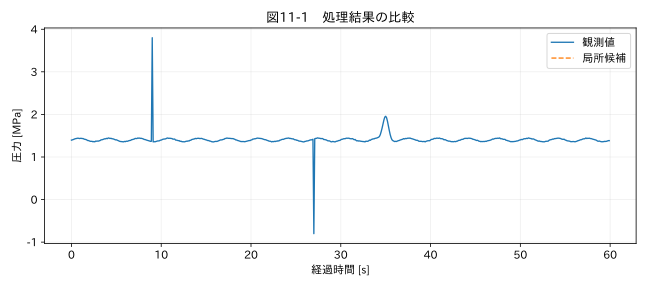

第III部 欠損値と異常値を扱う / 第11章
この章の節
外れ値の検出と判定
学習目標
Zスコア、IQR、MAD、Hampelの定義と前提を理解し、候補検出と原因判定を分ける。ゼロMADと未評価窓を正しく扱う。
11.1 「珍しい」と「誤っている」は違う
外れ値は、選んだ基準やモデルに対して他と離れた観測である。急な異常圧力は珍しくても、正しく測定されているかもしれない。逆に一定の校正ずれは、全点が同じだけ偏るため外れ値として見つからない。外れ値検出器だけで測定の正確さを保証できない。
圧力教材には二つの人工的な測定スパイクと、実現象を模した圧力パルスがある。全体の分布で検出する方法と、近傍の形から検出する方法を比較する。どの方法が優れているかではなく、何を候補としているかを説明できるようにする。
11.2 Zスコア
標本平均x̄、標本標準偏差sに対して zᵢ=(xᵢ−x̄)/s とする。標準偏差はこの本では特に断らない限り ddof=1、分母n−1の標本標準偏差を使う。s=0では割り算できないので、全値同一などの別の状態として扱う。
Zスコアを計算すること自体に正規分布は必要ない。しかし「3を超える確率は小さい」という解釈には分布仮定が必要だ。母平均・母標準偏差が既知の正規分布における±3σの外側は約0.27%だが、同じ小標本から平均と標準偏差を推定した検出に、その確率をそのまま適用しない。時系列の自己相関や繰り返し検査も考慮する。
極端な値は平均と標準偏差の両方を押し上げ、自分自身を目立たなくする場合がある。これがマスキングの一例である。運転モードが混在した二峰性分布にも、単一のZスコアは適さないことがある。
11.3 IQRとMAD
IQRは第3四分位数Q3と第1四分位数Q1の差、IQR=Q3−Q1 である。Q1−1.5IQR 未満または Q3+1.5IQR 超を候補とする規則は探索的に用いられるが、物理的な異常確定基準ではない。四分位数の計算法もライブラリや設定で違い得るため、再現性のために環境を固定する。
MADは median(|xᵢ−median(x)|) と定義する。正規分布の標準偏差と同程度の尺度へ合わせる係数は約1.4826であり、σ̂=1.4826 MAD とする。この係数は任意の分布で標準偏差に一致する保証ではない。SciPyでは scale='normal' がこの尺度調整に対応する。R5
例えば [0,1,2,40,4,5,6] の中央値は4、絶対偏差は [4,3,2,36,0,1,2]、MADは2である。外れた40を含んでも、尺度が極端には大きくならないことが分かる。
11.4 Hampelの窓を正しく計算する
Hampelの考え方では、各点の近傍窓に対し中央値mᵢとMADᵢを求め、|xᵢ−mᵢ| > k max(1.4826 MADᵢ, floor) を候補とする。本書のk=3.5とfloor=0.01は演習値であり、単位やノイズレベルに合わせて変える必要がある。floorは量子化などでMADが0になる場合の下限尺度である。
実装で注意するのは、MADの中心が同じ窓の中央値であることだ。先に全点の局所中央値を求め、それぞれ異なる中央値からの偏差をさらに移動中央値にかける簡便法は、厳密な窓MADと一致しない。本書は窓ごとに中央値とその絶対偏差を計算する。窓が不足する端部や欠損付近は未評価として残す。
関連する詳細実験は実践補講に掲載。入力形式・同期・補間・校正・多変量・チャンク境界を扱う。
実行するコードと結果
run.py · 共通処理の全ソース
教材フォルダで python examples/chapter11/run.py を実行。以下は省略のないスクリプト。共通モジュールは教材一式に含む。
from pathlib import Path
import sys
ROOT=Path(__file__).resolve().parents[2]
sys.path.insert(0,str(ROOT))
sys.path.insert(0,str(ROOT/'examples'))
import numpy as np
import pandas as pd
from common import load,truth,seconds,plot
from tsclean.core import numeric,timestamps,time_flags,hampel,freeze_candidates,interpolate_short,compare
df=load('02_pressure');x=df['測定値'];h=hampel(x,11,k=3.5,floor=.01)
z=(x-x.mean())/x.std(ddof=1)
q1,q3=x.quantile([.25,.75]);iqr=q3-q1
print('Z>3:',int(z.abs().gt(3).sum()),'IQR候補:',int(((x<q1-1.5*iqr)|(x>q3+1.5*iqr)).sum()),'Hampel候補:',int(h.candidate.sum()))
print('MAD未評価:',int((~h.assessed).sum()))
plot(11,seconds(df),{'観測値':x,'局所候補':x.where(h.candidate)},'圧力 [MPa]')
検証環境での実行結果を開く
Z>3: 6 IQR候補: 14 Hampel候補: 2
MAD未評価: 10

11.5 多変量へ進む前に
図11-1で候補となった点を、運転イベント、圧力の物理範囲、別センサーと照合する。圧力、電流、温度を組み合わせれば単変量では見えない矛盾を検出できるが、単位の違い、同期誤差、モード混在で距離が変わる。
Mahalanobis距離は共分散を考慮するが、共分散の推定が外れ値に弱い場合や、列がほぼ従属して行列が不安定になる場合がある。Isolation Forestのような方法も、学習データの構成や設定に依存する。高度なモデルを加える前に、列間の物理関係と学習区間の妥当性を確認する。
演習
基礎演習
三つの検出法の候補数を比較し、9秒と27秒の点がHampelで検出されることを確認する。
応用演習
窓を5、11、31に変える。幅のある圧力パルスの扱いと端部の未評価数はどう変わるか。
実務演習
温度が一定の区間で同じ値が100点続き、次の1点だけ0.01 °C変わった。MAD=0の場合、変化点を必ず異常とするべきか。
演習解答・解説を表示する
基礎：候補数は掲載された実行結果と照合する。閾値ごとに定義が違うため、候補数の大小だけで優劣を決めない。
応用：大きい窓は広いパルスを周囲の定常値からの逸脱として捉えやすくなる。完全窓なら端部の未評価は窓半幅ずつ増える。局所定常という前提も弱くなる。
実務：量子化の1ステップかもしれない。分解能や既知の短期ノイズに基づくfloorを設定し、固定値が通信停止か安定運転かも別に調べる。
章末まとめ
検出器の出力は確認対象である。尺度、窓、分布、モード、未評価範囲を明示し、物理的な証拠で判定する。